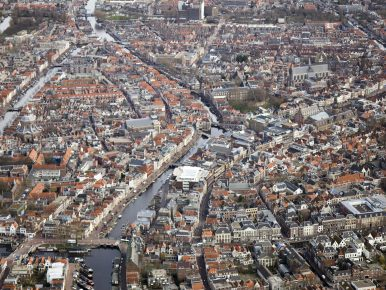

1. Bereikbaarheid door nabijheid
Nabijheid is cruciaal voor een goede bereikbaarheid. Wonen & werken bij voorzieningen en goed OV maakt dat veel goed te bereiken is. Mobiliteit begint daarom met verstandige ruimtelijke ordening. Liggen wonen en werk ver van elkaar, dan moeten ze langer reizen en kiezen ze vaker voor de auto dan de fiets. Woon je dichtbij veel voorzieningen en hoogwaardig openbaar vervoer, dan ben je minder tijd kwijt aan reizen en hoef je de auto niet te pakken.